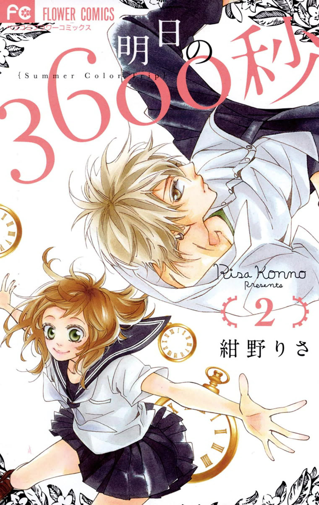

INFORMACIÓN
Titulo:
Ashita No 3600-byou
Autor:
Konno Risa
Genero:
Romance, Drama, Sobrenatural, Vida Escolar, Comedia
Mayo de su segundo año en bachillerato. En el último día de su viaje de campo! Natsuho simplemente no puede evitar preocuparse por un niño llamado Kayano en el mismo grupo que ella y su comportamiento de lobo solitario. Durante su viaje, ella se encuentra con un pequeño santuario en ruinas, al que no puede evitar limpiar y hacer una ofrenda. Ahí es cuando comienzan a sucederle cosas extrañas ... ¡